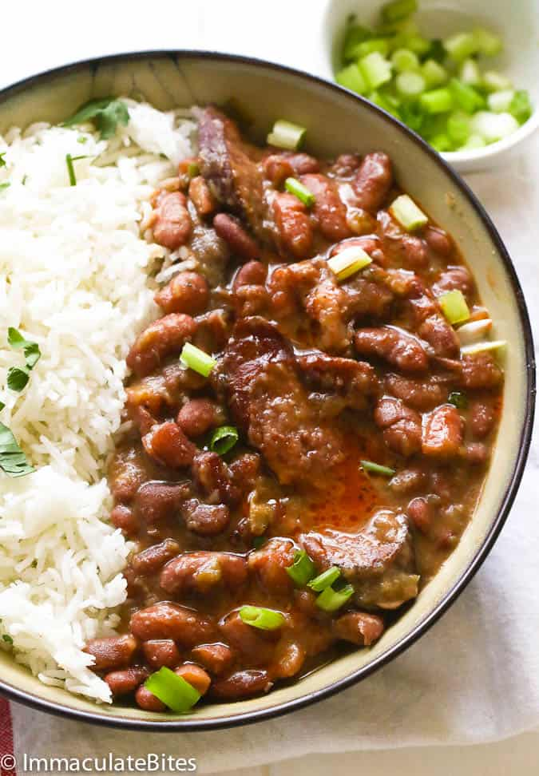

Red Beans & Rice

Description
A hearty cajun dish popular in Louisiana. Red beans, turkey/andioulle sausage, onions, celery, and various herbs and spices make this a perfect meal when craving some cajun cooking. MAY BE A BIT SPICY!
Ingrediants
- 1 pound dry kidney beans
- ¼ cup olive oil
- 1 large onion, chopped
- 1 green bell pepper, chopped
- 2 stalks celery, chopped
- 2 tablespoons minced garlic
- 6 cups water
- 2 bay leaves
- 1 tablespoon dried parsley
- 1 teaspoon dried thyme
- 1 teaspoon Cajun seasoning
- ½ teaspoon cayenne pepper
- ¼ teaspoon dried sage
- 1 pound andouille sausage, sliced
- 4 cups water
- 2 cups long grain white rice
Steps
- Rinse beans, and then soak in a large pot of water overnight.
- Heat oil in a skillet over medium heat. Cook onion, bell pepper, celery, and garlic in olive oil for 3 to 4 minutes.
- Rinse beans, and transfer to a large pot with 6 cups water. Stir cooked vegetables into beans. Season with bay leaves, parsley, thyme, Cajun seasoning, cayenne pepper, and sage. Bring to a boil, and then reduce heat to medium-low. Simmer for 2 1/2 hours.
- Stir sausage into beans, and continue to simmer for 30 minutes.
- Meanwhile, prepare the rice. Bring water and rice to a boil in a saucepan. Reduce heat, cover, and simmer for 20 minutes. Serve beans over steamed white rice.